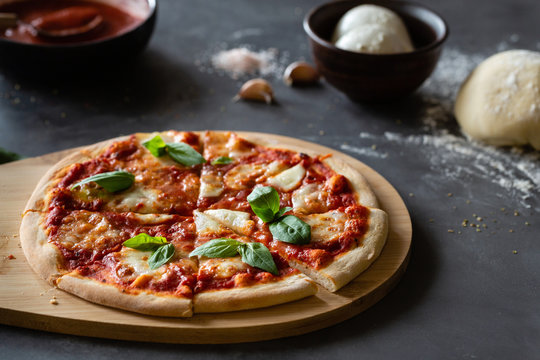

Pizza Margherita
Home

Description
Pizza Margherita is roundish in shape with a raised edge (the cornicione) and seasoned with hand-crushed peeled tomatoes, mozzarella (buffalo mozzarella or fior di latte), fresh basil leaves, and extra virgin olive oil. The dough is made by mixing water, salt, and yeast (either sourdough, or fresh or dry baker's yeast) with flour
The origins of pizza Margherita came from mixing similar toppings that were already present in Naples between 1796 and 1810. In 1849 Emanuele Rocco recorded different pizza toppings including basil, tomatoes, and thin slices of mozzarella added to the toppings already present.
Ingredients
- 1 can whole tomatoes 800g
- 2 teaspoons extra-virgin olive oil 10ml
- 2 small garlic cloves
- ½ teaspoon sea salt
- 500g pizza dough
- 200g fresh mozzarella cheese
- Basil leaves
- Red pepper flakes
Steps
- Preheat the oven to 260°C. Place a pizza stone or baking steel in the oven if using.
- In a food processor, combine the tomatoes, olive oil, garlic, and salt. Process until smooth.
- Spread a heaping ½ cup of the tomato sauce evenly over the pizza dough, leaving a 2cm border around the edges.
- Top with the mozzarella and transfer to the hot oven. Bake for 10 to 12 minutes, or until the crust is browned.
- Remove from the oven and top with fresh basil and pinches of red pepper flakes. Drizzle with olive oil and serve.